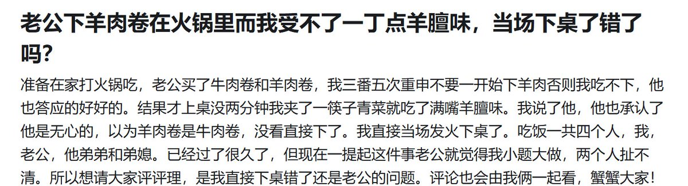

昨天和欧润吉🍊
@YesterdayOrange
老公下羊肉卷在火锅里而我受不了一丁点羊膻味，当场下桌了错了吗？
准备在家打火锅吃，老公买了牛肉卷和羊肉卷，我三番五次重申不要一开始下羊肉否则我吃不下，他也答应的好好的。结果才上桌没两分钟我夹了一筷子青菜就吃了满嘴羊膻味。我说了他，他也承认了他是无心的，以为羊肉卷是牛肉卷，没看直接下了。我直接当场发火下桌了。吃饭一共四个人，我，老公，他弟弟和弟媳。已经过了很久了，但现在一提起这件事老公就觉得我小题大做，两个人扯不清。所以想请大家评评理，是我直接下桌错了还是老公的问题。评论也会由我俩一起看，蟹蟹大家！
